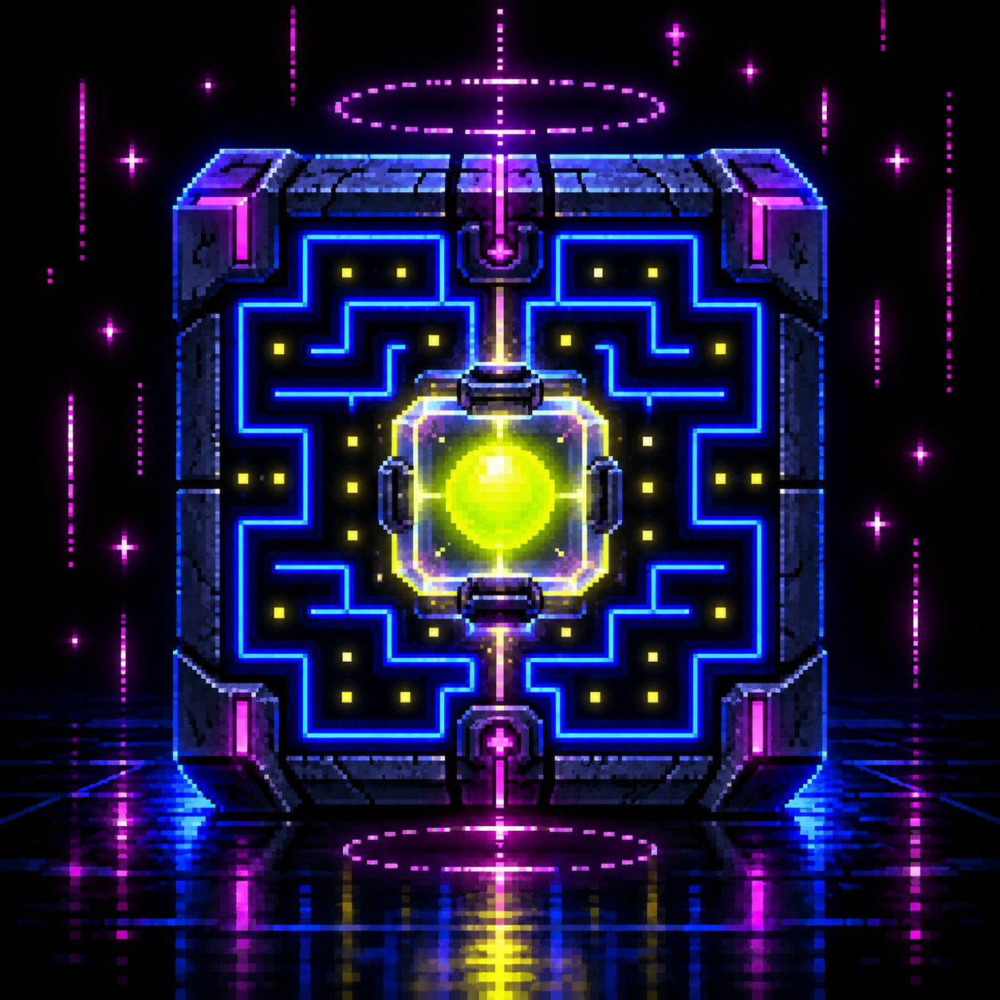

Choose a token
Enter an ID from 1 to 2,360.

PAC WORLD GENESISRobinhood Chain · revealed collection
Explore any of the 2,360 revealed Genesis maze worlds. Check a token's current owner on Robinhood Chain, then play its world for free. No wallet connection, payment, or signature is needed.
0xd5035b128f7afb26fd0d54d55c612f00196be049The free maze game is live. A separate owner-controlled contract wallet is still undeployed and is not required to play. This page never requests wallet access or a transaction.
Enter an ID from 1 to 2,360.
Read the NFT owner directly from Robinhood Chain, without connecting a wallet.
Open the revealed maze. No fee, transaction, or wallet signature is required.